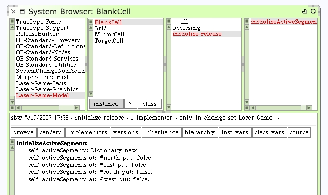
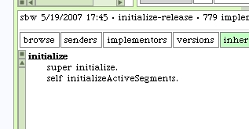
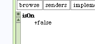
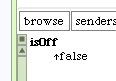

We need to initialize the new activeSegments variable. Add a protocol "initialize-release" and add a new instance method #initializeActiveSegments. The default condition for these should all be false.
The #initializeActiveSegments needs to be activated appropriately. One common convention is to use lazy-initialization -- call the method when the variable is discovered to be nil. A technique I'd like to use is attach it to the automatic initialize process that happens whenever the object is instantiated. Write a new #initialize method as follows.
Note that the first thing we do in our #initialize method is call "super initialize". This is a good practice to remember. Since we are implementing an #initialize method on our new class it is conceivable that we are overridding an important initialize operation somewhere in our superclass hierarchy. By calling "super initialize" we give the superclasses in our hierarchy the opportunity to complete their initialization steps first.
Before we get too far away from our original intention, we should write the two methods we intend to test. I created a new protocol for them called "testing". For the moment let them answer false. These are new instance methods for the BlankCell class.
 Clarification. You may be wondering how to create the Up Arrow character shown in those two methods. Use the "^" character. You will find this character on your keyboard as Shift-6. The early dialects of Smalltalk used this up-arrow character and Squeak still renders the ^ as an up arrow character.